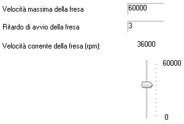
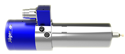

Fresa

Nota: per la velocità della fresa é difficile stabilire una regola; infatti, essa deve tener conto dei seguenti fattori:
É importante ricordare che ad una velocità troppo bassa in genere corrisponde una coppia ridotta; ciò può provocare l'arresto della rotazione e la conseguente rottura dell' utensile; diversamente, una velocità della fresa troppo alta può causare la fusione del materiale e la bruciatura dell'utensile.
velocità massima: velocità massima di rotazione della fresa;
ritardo di avvio: ritardo in secondi di attesa tra l’accensione della fresa e l’inizio del movimento degli assi;
Nota: per frese ad alta frequenza è necessario attendere del tempo tra l'accensione della fresa ed il raggiungimento del numero di giri impostato: si può correre il rischio di arrivare sul materiale con una velocità di rotazione dell'utensile inadeguata, con grossi inconvenienti per l'utensile, per il materiale da lavorare e per la fresa stessa
velocità corrente: velocità corrente di rotazione della fresa in rivoluzioni per minuto (rpm).
Nota: quando il percorso utensile contiene anche l’informazione di velocità della fresa, la variazione manuale della velocità può risultare inefficace.
